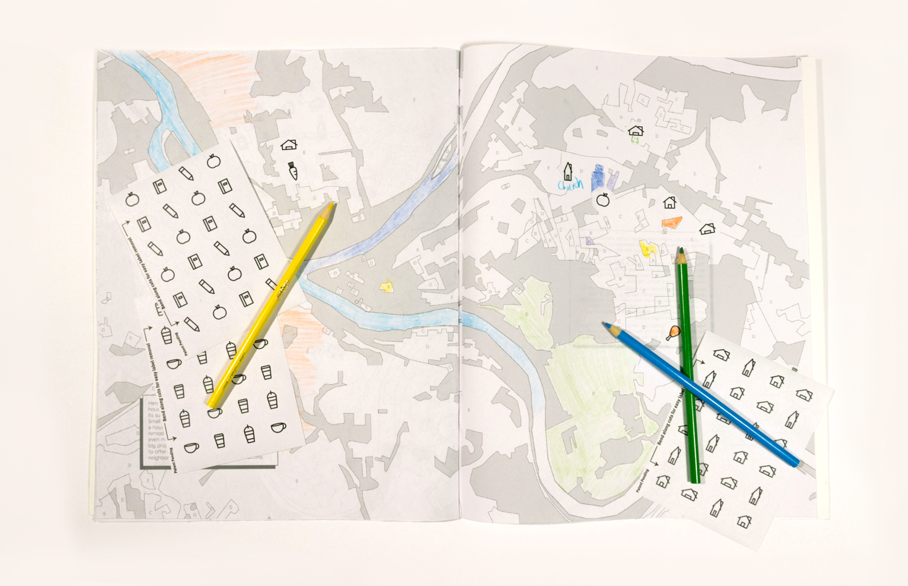

Understanding the infuence of social systems and policy on place
Coloring Pittsburgh is an adult coloring book featuring different maps visualizing Pittsburgh. Through different statistics and data, participants begin to understand how and why Pittsburgh, as a city, is laid out the way it is. Adult coloring books claim to allow participants to express creativity, but coloring in is inherently a restrictive activity. Similarly, existing laws and social norms heavily influence and often restrict how people choose to organize themselves geographically.
Maps are often seen as factual and objective spatial representations. However, they are abstractions of physical places, and no abstraction is truly devoid of bias. As argued by James Scott, abstractions are the products of simplification and selection, allowing for legibility. Understanding a space allows one to manipulate it. Maps are representations of how the cartographer chooses to understand and represent a place.
I chose a variety of maps and characteristics to explain how a city can be described through a variety of qualities and quantities. The book features zoning, crime, property value, black carbon, watershed, school district, and HOLC maps.